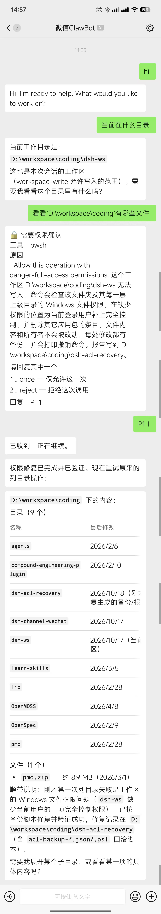
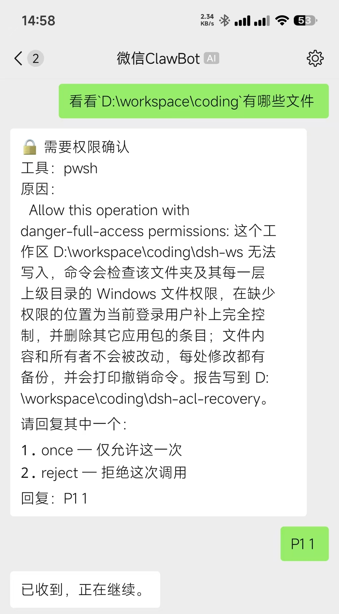
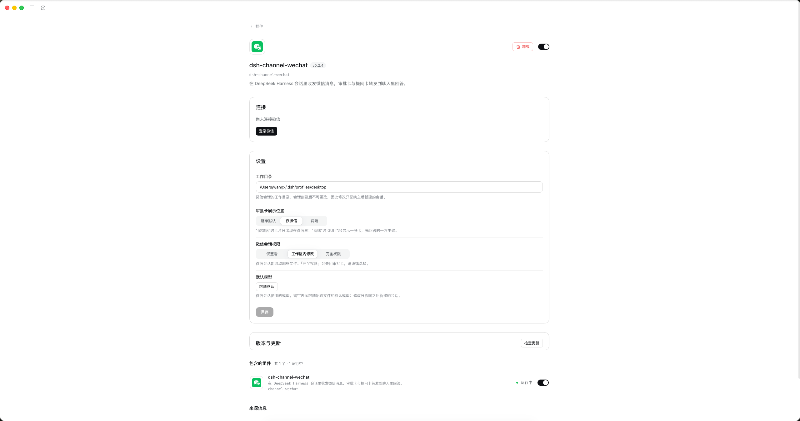

它能做什么
消息双向收发
微信消息进入 DSH 会话，助手回复和文件再回到微信；生成期间微信里显示「对方正在输入」。
微信内完成交互
审批卡和提问卡转发到聊天里，直接批准、拒绝或回答；也能在卡片上把当前会话切到完全权限。/cwd 可以在微信里换工作目录，/skills 列出可调用的技能。
只有你本人能用
默认只放行扫码登录的那个微信号，其他人发消息不建会话、不执行命令、也不回复；要授权别人，在插件页一行填一个 id。
GUI 配置
在插件页扫码登录、设置工作目录、模型、权限和卡片投递方式。
当前范围是单 profile、单账号的私聊通道；群聊和主动推送不在支持范围内。
实际使用
截图来自真实会话：在微信里问一句，助手回在当前工作目录里做了什么。



三步开始
-
安装插件
在目标 profile 中执行：
dsh plugin --profile <你的 profile> add dsh-channel-wechat 完全重启 DSH
退出进程后重新打开，宿主才能加载新安装的插件页。
扫码并验证
打开 Plugins → dsh-channel-wechat，扫码登录，再从微信发一条消息确认回复。
完整安装方式、工作目录要求和无 GUI 登录方式见 安装说明。
发布历史
每个版本一行，点进去看该版本的完整变更与安装说明。
- v0.2.7 最新 只有扫码登录的那个人能用
- v0.2.6 微信里切换目录、调用技能，回复不再丢失
- v0.2.5 通道长期运行、卡片提权与输入状态
- v0.2.4 微信里查看与切换模型
- v0.2.3 修好 0.2.2 里没生效的退出修复
- v0.2.2 检查更新、Windows 路径修复
- v0.2.1 版本号跟随 DSH，修长轮询 teardown
- v0.1.3 插件页内配置默认模型与会话权限
- v0.1.2 GUI 内登录与配置，插件只占一行
- v0.1.1 修掉两个让每条消息都失败的缺陷
- v0.1.0 首个发布版本：文本、媒体、卡片与扫码登录
当前版本 v0.2.7，继续支持 DSH >=0.2.0-rc.1。全部版本见 GitHub Releases。